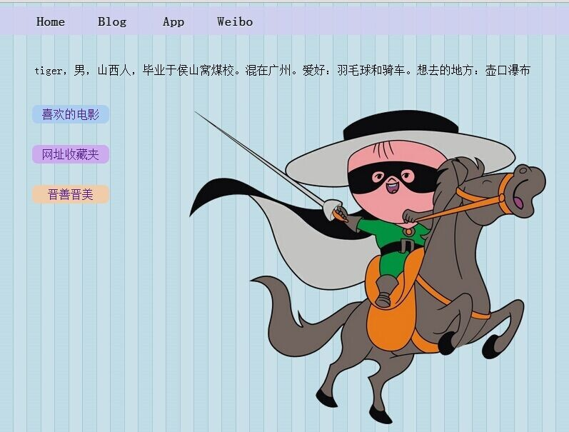

servlet最好不使用成员变量，这会线程不安全的。(11-21)
开了一下午的公司业务培训会议，然后晚上一起去吃了芙蓉楼。(11-20)
这个页面下的游戏都蛮好玩的。
cutjs (11-19)
昨天来了个运营新同事，今天来了个商务新同事。(11-18)
晚上去南浦打了个球，太空羽毛球馆，第一天营业，还不错。(11-17)
10点半从新塘出发，6点到南山深大。推迟了三年的骑行计划，终于完成了。(11-16)
心情很不好，下午出去修了下自行车刹车，直接开拔，往深圳。(11-15)
今天周五，下班后去南浦朋友家打了个边炉。回来的地铁上看完了《小王子》.(11-14)
原来IE浏览器对ajax是有缓存的，同样的url请求每次都只会返回第一次的结果。这个设计还是很挺好的。
但有时需要实时的查询结果，则可以通过在url后加上一个参数，例如r，然后每次给r一个随机的数值。
这样每次的url就不一样了，就能获得实时结果了。(11-14)
把网站首页修改了下，加了个卡通图片，一下漂亮了很多额。(11-13)

在QQ登录的情况下，按Ctrl+Alt+a，即可打开截图工具。截图后须注意保存。(11-13)
图片的背景如何变为透明：用光影魔术手打开图片，采用色素抠图，替换所选择的背景为透明色即可。(11-13)
《百年孤独》：无论走到哪里都应该记住，过去的都是假的，回忆是一条没有尽头的路，一切以往的春天都不复存在，就连那最坚韧而又狂乱的爱情，归根结底也不过是一种转瞬即逝的现实。。(11-13)
今天周三，下班后请一个朋友在时尚天河吃了烤鱼，然后去逛了下1200。(11-12)
奢侈了一把，在当当上买了五本书。光棍节嘛，又刚发工资，犒劳下自己了。(11-11)
今天周一，下班后，在时尚天河吃了个12元牛杂。然后上面的购书中心看了会《图解HTTP》。(11-10)
如果广州所有公交车，尤其BRT，上面的座位都减少一半，应该会有效缓解交通吧。(11-10)
珠江新城图书馆待了一下午帮朋友弄了下安卓相册开发的问题然后在花城汇吃了个黑山什么火锅。(11-9)
中午下了个馆子饱餐了一顿然后去了麓湖公园划船一小时好爽然后去了上下九买了两件班尼路外套。(11-8)
这周终于过去了，周末要好好休息下，这段加班可把我累坏了。(11-7)
本机运行没事，一到服务器，tomcat就报错"Error filterStart"。简直折磨死我。
费了九牛二虎之力，终于解决掉，原来是编译的jdk版本与服务器的不同，导致Filter初始化失败。
在tomcat的log目录下有报错的详细信息，我也是解决了才看到，浪费了半天时间。(11-6)
斗地主终于通过了移动游戏基地的联调测试。连续几天加班到十点多，感觉好累也。(11-5)
天气转冷，开始穿外套了。(11-4)
天气转冷，开始穿长袖衬衫了。okyule域名终于备案成功了。(11-3)
在公司待了一天。晚上去时尚天河吃了个年糕炒拉面。 (11-2)
宅了一天，就不想动。 (11-1)